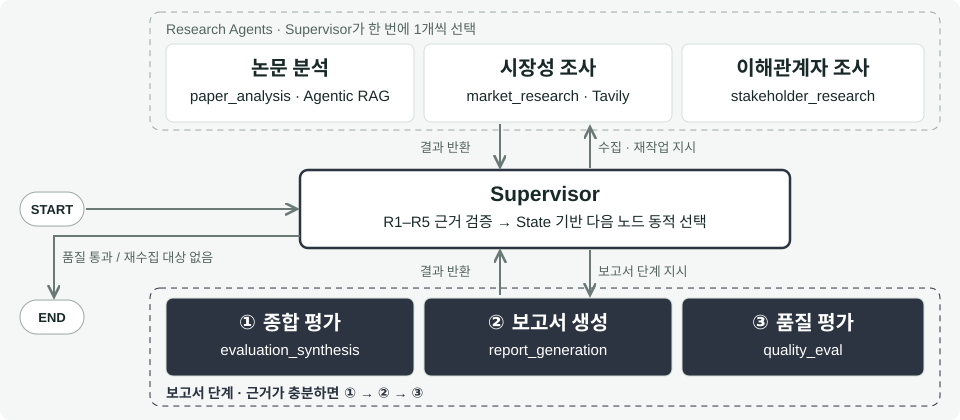
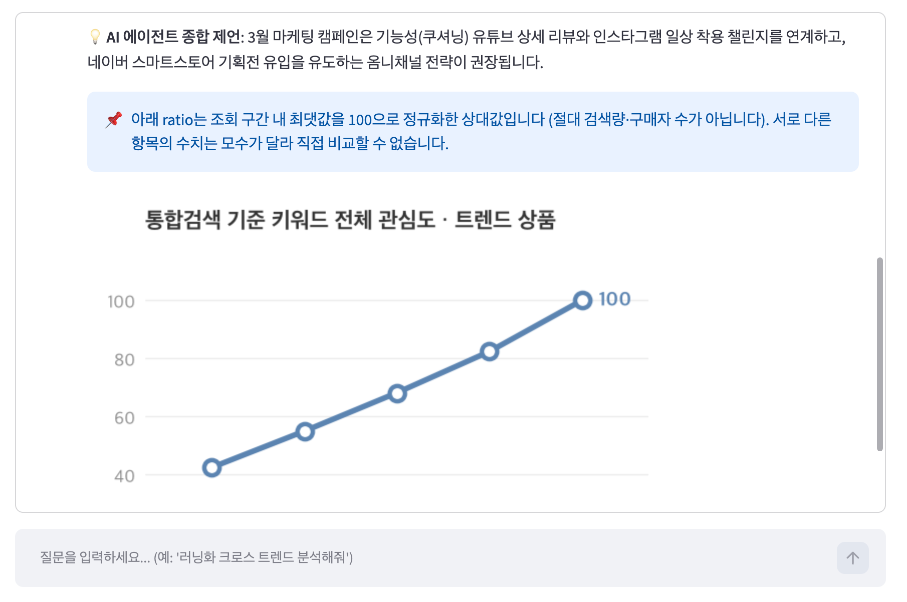
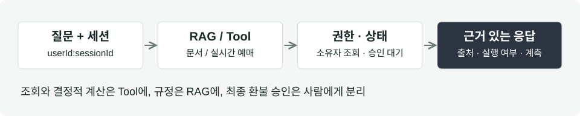
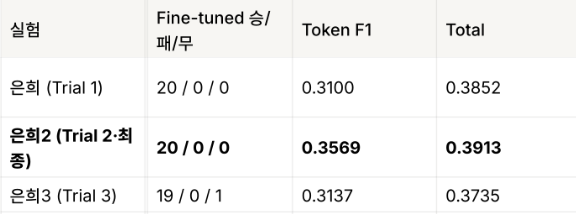
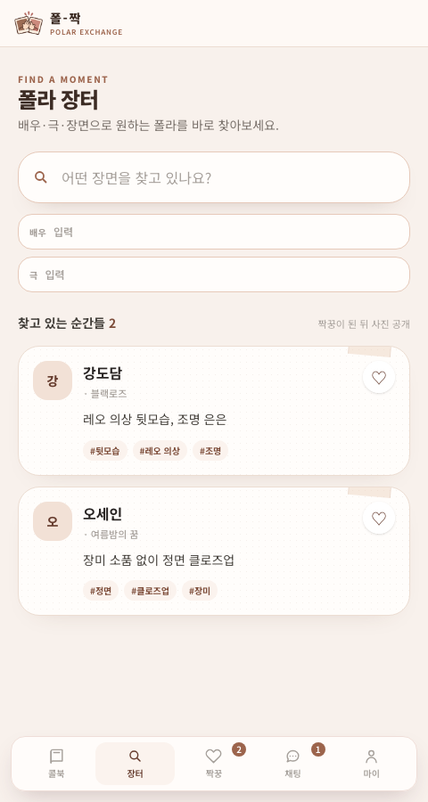
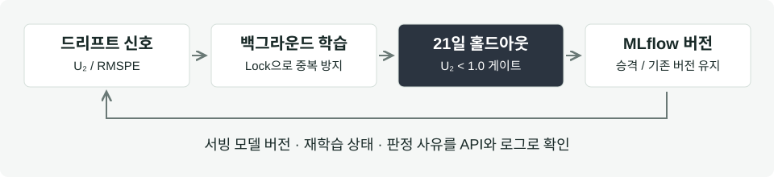
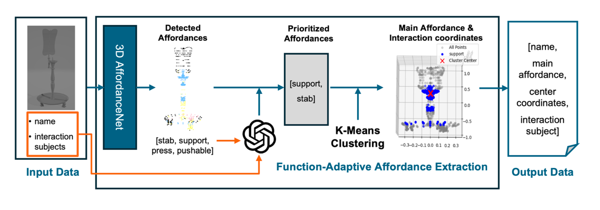

KV Cache 기술 평가 멀티 에이전트
근거 없는 판단을 막는 LangGraph Supervisor 멀티 에이전트. 보고서 단계 3개 노드(종합 평가 · 보고서 생성 · 품질 평가)와 Supervisor 라우팅을 담당했습니다. LLM 역할을 근거 문장 번역으로 좁혀 Hallucination을 줄이고, 근거가 없으면 Unknown을 반환합니다.
AI Agent Engineer
KAIST Ubiquitous Virtual Reality Lab에서 석사 과정을 수료하고(지도교수 우운택), LLM 기반 XR 상호작용 저작 연구로 IEEE ISMAR-Adjunct 2024에 제1저자 논문을 발표했습니다.
현재는 LLM Agent를 서비스로 만드는 일에 집중하고 있습니다. 멀티 에이전트 · RAG · Tool Calling을 구현하고, Golden Set과 통제 실험, 실제 환경 테스트로 Agent가 잘 동작하는지 측정하고 실패할 때도 안전하게 멈추도록 만듭니다.

근거 없는 판단을 막는 LangGraph Supervisor 멀티 에이전트. 보고서 단계 3개 노드(종합 평가 · 보고서 생성 · 품질 평가)와 Supervisor 라우팅을 담당했습니다. LLM 역할을 근거 문장 번역으로 좁혀 Hallucination을 줄이고, 근거가 없으면 Unknown을 반환합니다.

LangChain Tool Calling 기반 YouTube 검색 · 수집 Tool. Mock 테스트를 통과한 뒤 실제 API에서만 발생한 ID 추출 실패를 재현 테스트 → 수정 → 회귀 테스트로 해결하고 fallback을 적용했습니다. 수작업 약 30분 걸리던 경쟁사 분석 초안을 7초 이내에 생성합니다.

규정은 RAG로, 본인 예매는 Tool로 확인해 답하는 Spring AI 상담 Agent. 환불 실행은 승인 대기 티켓으로 분리하고, 출처 · 권한 · 행동을 채점하는 Golden Set을 만들어 6/6 시나리오를 통과했습니다.

사내 업무 QA를 반영하지 못하던 Qwen2.5-1.5B를 LoRA SFT로 개선했습니다. 학습 조건을 통제해 비교한 결과 Base 대비 LLM Judge 1:1 비교 20승 0패, 팀 18개 조건 중 1위로 최종 채택됐습니다.

트윗 캡처 · 자유 형식 글로 흩어진 교환 정보를 정형 데이터로 바꿔 검색 · 교환 · 채팅까지 잇는 서비스를 1인 풀스택으로 개발 · 운영 중입니다. OCR → 규칙 파서 우선 · LLM 보조 방식을 로컬 LLM · VLM과 비교해 선택했고, 항목 추출 일치 0/15 → 13/15, 초안 응답 약 60초 → 6초로 개선했습니다. SSE 실시간 알림, 행 잠금 동시성 제어, Cloud Run 배포.

재학습이 끝나도 Holdout 검증을 통과하기 전엔 서빙 모델을 바꾸지 않는 MLflow 파이프라인. 비동기 재학습, 중복 실행 방지, Model Registry 기반 버전 · 판정 이력 관리를 담당했습니다.

문화기술대학원 석사 수료 · Ubiquitous Virtual Reality Lab (지도교수 우운택)
컴퓨터교육과 · 멀티미디어공학 복수전공 학사
RAG · SFT · Agent, Spring Boot · MSA 팀 프로젝트 · SafePass Scrum Master
인턴 · VR 다중 로봇 작업 인터페이스 개발, 파일럿 실험(5명)에서 작업 속도 약 30% 향상